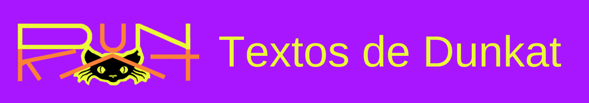

LA LUNA Y EL CONEJO.
La luna le dijo al conejo:
- No le temas a la marea que destruye barcos,
- Incluso si el huracán destroza tu alrededor
-O si el Leviatán come tus recuerdos
Te daré brillo para envidiar a las estrellas
Te daré alas para volar como un pájaro
Y llegarás tan lejos que podrás tocar el cielo
Pero solo si haces una cosa
Cree para ver
Confía en mi, como lo hago yo contigo ahora ㅤ